Deployment Diagrams Reference
| Notation | Description | ||||||||||||||
|---|---|---|---|---|---|---|---|---|---|---|---|---|---|---|---|
| Artifact | |||||||||||||||

Artifact web-app.war |
An artifact is a classifier that represents some physical entity, a piece of information that is used or is produced by a software development process, or by deployment and operation of a system. A particular instance (or "copy") of an artifact is deployed to a node instance. Artifact is presented using an ordinary class rectangle with the keyword «artifact». Examples in UML specification also show document icon in upper right corner. |
||||||||||||||
|
C# source file artifact UserServices.cs and Library commons.dll |
The UML Standard Profile defines several standard stereotypes that apply to artifacts:
Standard stereotypes - subclasses of «file»:
Standard UML 1.x stereotypes that is now obsolete:
|
||||||||||||||

Artifact web-tools-lib.jar |
Artifact alternatively could be is depicted by an icon.
|
||||||||||||||
| Associations of Artifacts | |||||||||||||||
|
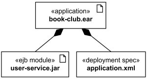
Application book-club.ear artifact contains EJB user-service.jar artifact and deployment descriptor. |
Artifacts can be involved in associations to other artifacts, e.g. composition associations. For instance, a deployment descriptor artifact for a component may be contained within the artifact that manifests that component. In that way, the component and its descriptor are deployed to a node instance as one artifact instance. |
||||||||||||||
| Dependency between Artifacts | |||||||||||||||

The book-club.war artifact depends on web-tools-lib.jar artifact |
Dependency between
artifacts is notated
in the same way as general dependency,
i.e. as a general dashed line with an open arrow head directed from client artifact to supplier artifact.
|
||||||||||||||
| Manifestation | |||||||||||||||
|
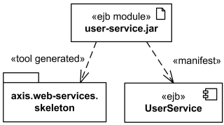
EJB component UserService and skeleton of web services are manifested by EJB module user-service.jar artifact. |
Manifestation is an abstraction relationship which represents the concrete physical rendering of one or more model elements by an artifact or utilization of the model elements in the construction or generation of the artifact. Since UML 2.0 artifacts can manifest any packageable elements, not just components. Manifestation between artifact and packageable element is notated in the same way as an abstraction dependency, i.e. as a general dashed line with an open arrow head directed from artifact to packageable element (e.g. component or package) and labeled with the keyword «manifest». In UML 1.x, the concept of manifestation was referred to as implementation and was annotated as «implement». |
||||||||||||||
| Node | |||||||||||||||
|
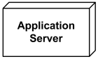
Application Server Node. |
Node is a deployment target which represents computational resource upon which artifacts may be deployed for execution. Node is shown as a perspective, 3-dimensional view of a cube. |
||||||||||||||
| Hierarchical Node | |||||||||||||||
|
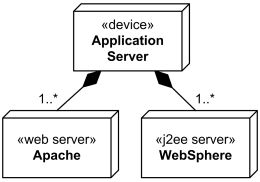
Application server box runs several web servers and J2EE servers. |
Nodes may have an internal structure defined in terms of parts and connectors associated with them for advanced modeling applications. Parts of node could be only of type node. Hierarchical nodes (i.e., nodes within nodes) can be modeled using composite associations, or by defining an internal structure for advanced modeling applications. |
||||||||||||||
|
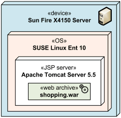
Several execution environments nested into server device |
Execution environment is usually part of a general node or «device» which represents the physical hardware environment on which this execution environment resides. Execution environments can be nested (e.g., a database execution environment may be nested in an operating system execution environment). |
||||||||||||||
| Device | |||||||||||||||
|
Application Server device. |
A device is a subclass of node which represents a physical computational resource with processing capability upon which artifacts may be deployed for execution. Device is rendered as a node (perspective, 3-dimensional view of a cube) annotated with keyword «device». |
||||||||||||||
|
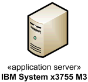
Application Server device depicted using custom icon. |
UML provides no standard stereotypes for devices. Examples of non-normative stereotypes for devices are:
|
||||||||||||||

Computer stereotype with tags applied to Device class. |
Profiles, stereotypes, and tagged values could be used to provide custom icons and properties for the devices. |
||||||||||||||

Database Server device depicted using custom icon. |
|
||||||||||||||
|
Mobile smartphone device depicted using custom icon. |
|
||||||||||||||
| Execution Environment | |||||||||||||||
|
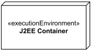
Execution environment - J2EE Container |
An execution environment is a (software) node that offers an execution environment for specific types of components that are deployed on it in the form of executable artifacts. Execution environment is notated as a node (perspective, 3-dimensional view of a cube) annotated with the standard stereotype «executionEnvironment». |
||||||||||||||
|
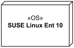
Linux Operating System Execution Environment |
UML provides no other standard stereotypes for execution environments. Examples of reasonable non-normative stereotypes are:
|
||||||||||||||
|
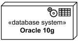
Oracle 10g DBMS Execution Environment |
|||||||||||||||
| Communication Path | |||||||||||||||

Communication path between several application servers and database servers. |
A communication path is association between two deployment targets, through which they are able to exchange signals and messages. Communication path is shown as association, it has no additional notation. |
||||||||||||||

Gigabit Ethernet as communication path between application and database servers. |
When deployment targets are some physical devices, communication path will typically represent a physical connection or media between the nodes. |
||||||||||||||
|
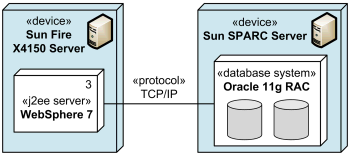
TCP/IP protocol as communication path between J2EE server and database system. |
When deployment targets are execution environments, communication path will typically represent some protocol. |
||||||||||||||
| Deployment | |||||||||||||||
|
J2EE web application archive portfolio.war deployed on Apache Tomcat JSP server. |
A deployment is a dependency relationship which describes allocation (deployment) of an artifact to a deployment target. Deployment could be shown as a dependency that is drawn from the artifact (supplier) to the deployment target (client) and is labeled with «deploy». Note, that dependency usually points from the client to the supplier, i.e. in the direction opposite to what is recommended by UML 2.4 for deployment. On the other hand, UML specification allows to change direction for a dependency based on user's stipulations. |
||||||||||||||

J2EE web application archive portfolio.war deployed on two instances of Apache Tomcat JSP server - psrv_023 and psrv_037. |
At the "instance level" instances of artifacts could be deployed to specific instances of the deployment target. The underlining of the name of artifact instance may be omitted. |
||||||||||||||
|
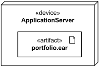
The portfolio.ear artifact deployed on application server. |
Deployed artifacts could be shown contained within a deployment target. |
||||||||||||||
|
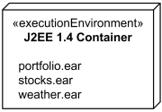
The portfolio.ear, stocks.ear, weather.ear artifacts deployed in J2EE 1.4 container. |
Deployment could also be shown using textual list of deployed artifacts within a deployment target. |
||||||||||||||
|
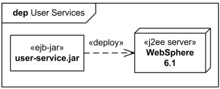
User Services deployment shown in the diagram frame. |
Deployment could be shown in a rectangular frame around the diagram with deployment name in a compartment in the upper left corner. The long form name for the diagram heading is deployment and abbreviated form is dep. |
||||||||||||||
| Deployment Specification | |||||||||||||||
|
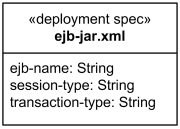
The ejb-jar.xml deployment specification |
A deployment specification at specification level is graphically displayed as a classifier rectangle with optional deployment properties in a compartment. | ||||||||||||||
|
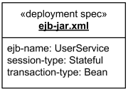
The ejb-jar.xml deployment descriptor |
An artifact that reifies or implements deployment specification properties at instance level is a deployment descriptor. Deployment descriptor is rendered as a classifier rectangle with the name underlined and with deployment properties having specific values in a compartment. |
||||||||||||||
| Dependency | |||||||||||||||

The ejb-jar.xml deployment specification for user-service.ejb artifact. |
A deployment specification could be displayed
as a classifier rectangle attached to a
component artifact
using a regular dependency arrow pointing to deployed artifact.
|
||||||||||||||
| Association | |||||||||||||||
|
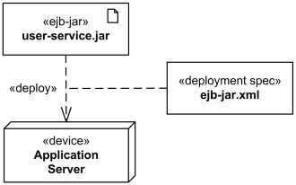
The ejb-jar.xml deployment specification attached to deployment. |
Deployment specification could be associated with the deployment of a component artifact on a node. In this case deployment specification could be shown as a classifier rectangle attached to the deployment. Note, UML 2.4 specification shows this association as a dashed line (while association is normally displayed as solid line.) |
||||||||||||||